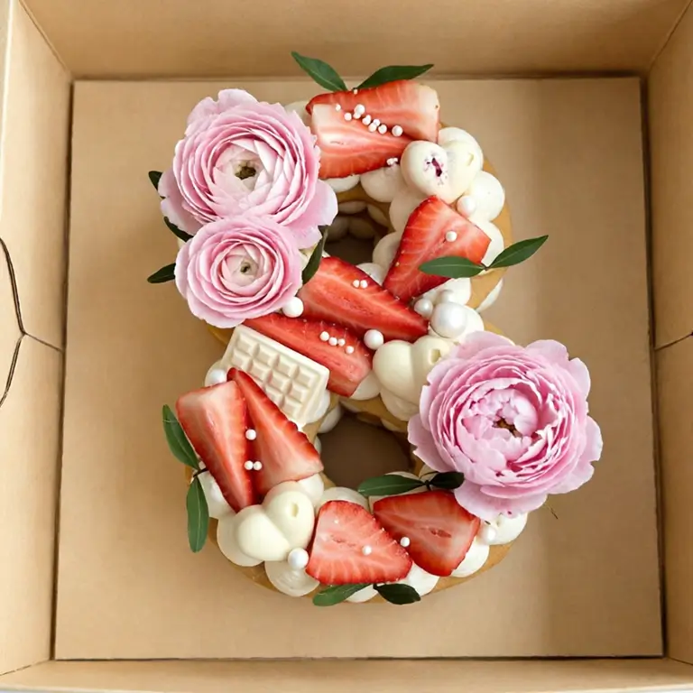
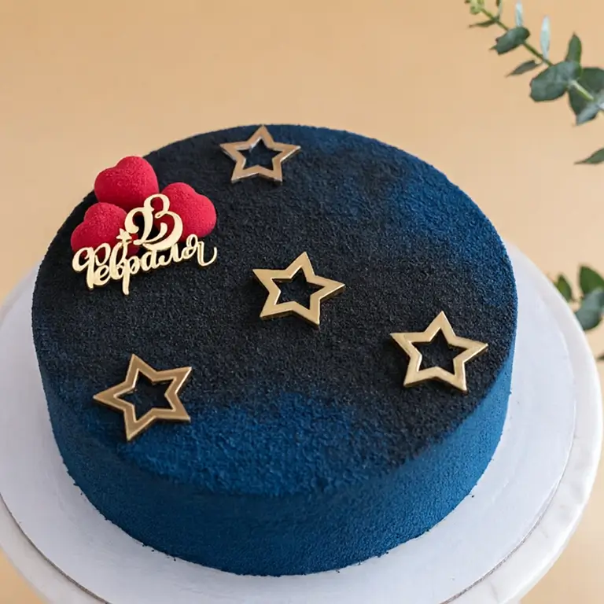
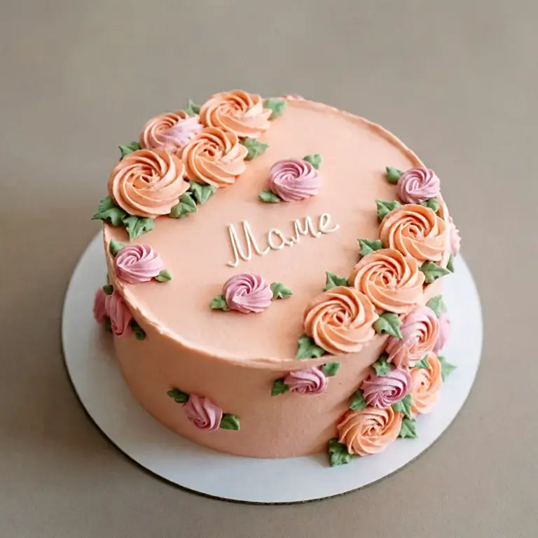
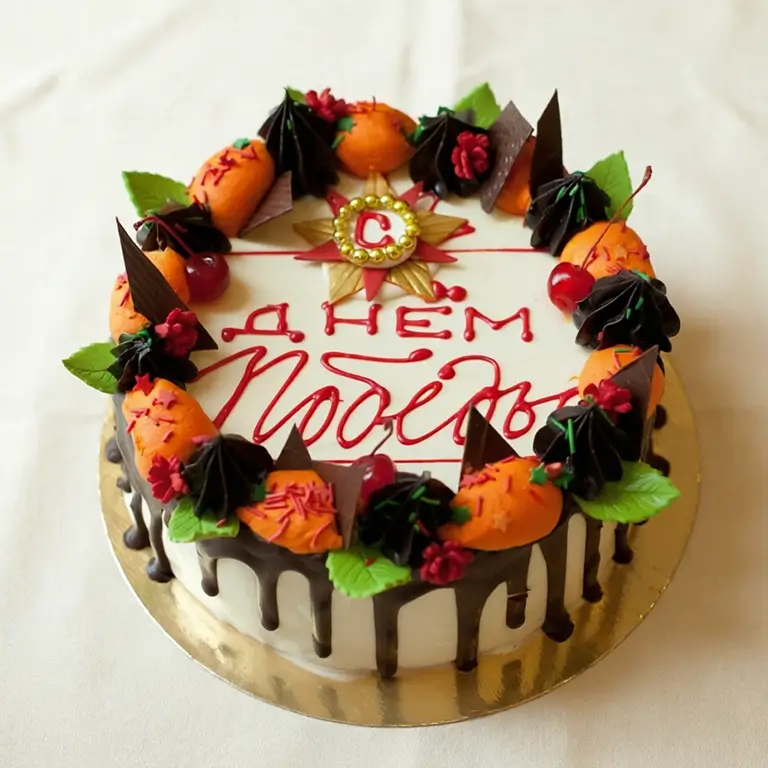
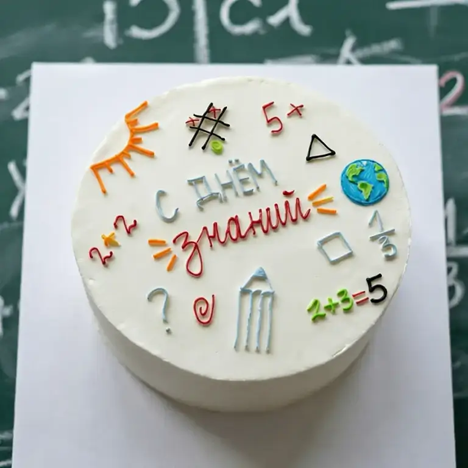
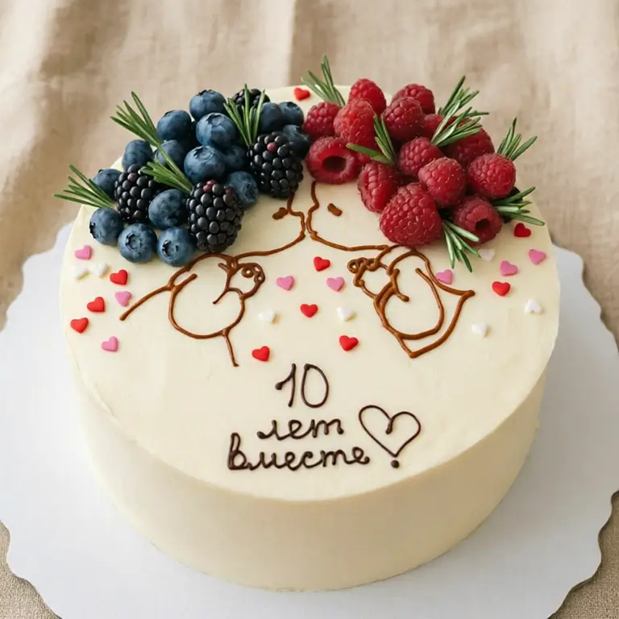
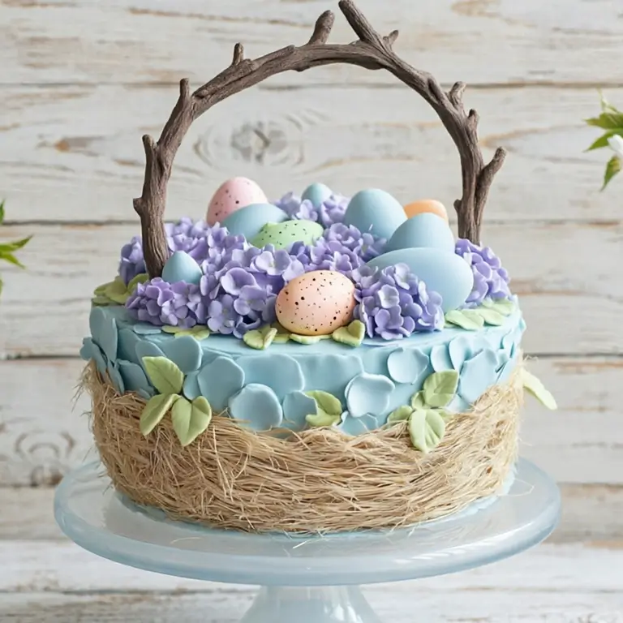
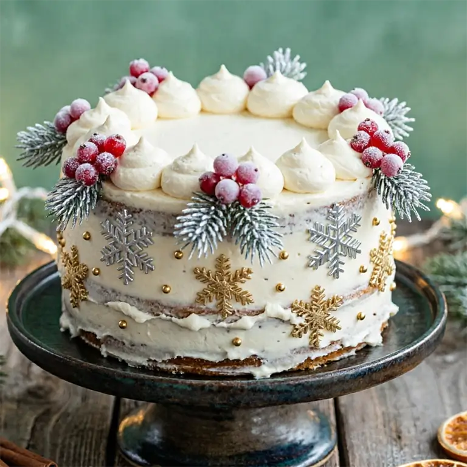
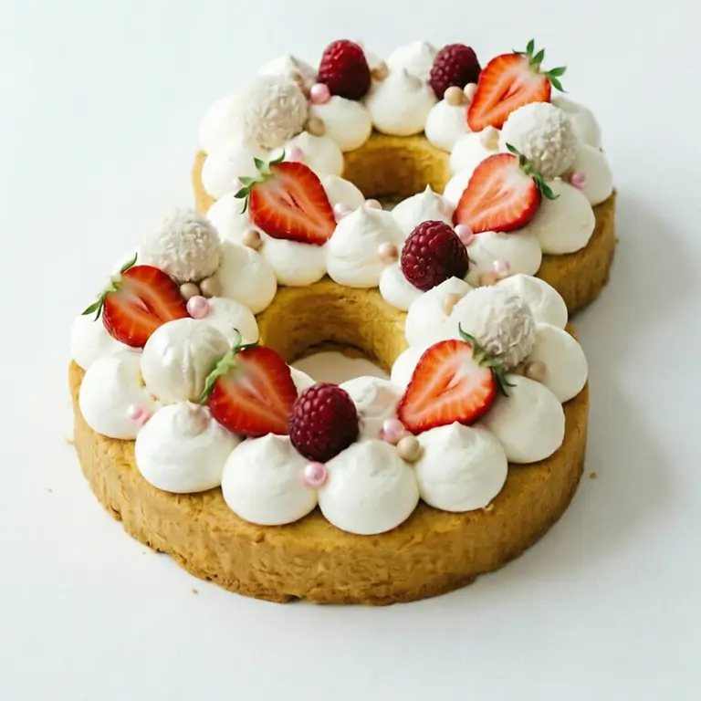

К праздникам«Весенний вальс»
Открытый торт-цифра «8»: кремовые облачка, свежая клубника, розовые ранункулюсы и пион в крафт-коробке.
Состав: бисквитная основа, крем-чиз, свежая клубника, ранункулюсы и пионы
от 3 200 ₽

К праздникамОткрытый торт-цифра «8»: кремовые облачка, свежая клубника, розовые ранункулюсы и пион в крафт-коробке.
Состав: бисквитная основа, крем-чиз, свежая клубника, ранункулюсы и пионы

К праздникамГлубокий синий велюр с золотыми контурными звёздами, алыми сердцами и топпером «23 февраля».
Состав: шоколадный бисквит, карамельный мусс, ореховый пралине, велюр

К праздникамПерсиковый крем-чиз с розами-розетками двух оттенков и тёплой надписью «Маме».
Состав: ванильный бисквит, ягодный мусс, кремовые розетки, пищевые красители

К праздникамРетро в духе советской кондитерской: шоколадные подтёки, оранжевые кремовые цветы, флажки и звезда с надписью.
Состав: бисквит по ГОСТу, масляный крем, шоколадная глазурь, свежая вишня
Белый торт с юмористической надписью и дудл-боксером в перчатках — для тех, кто празднует с улыбкой.
Состав: ванильный бисквит, ягодный мусс, ягодный конфит, крем-чиз, айсинг
Омбре из сердец от насыщенно-алого к нежно-розовому и точечное сердце на макушке.
Состав: ванильный бисквит, клубничный мусс, клубничный конфит, крем-чиз

К праздникамЦветные дудлы айсингом — солнце, глобус, примеры, оценки и надпись «С днём знаний».
Состав: ванильный бисквит, ягодный мусс, крем-чиз, цветной айсинг

К праздникамДудл-пара с поцелуем, ягодные кластеры с розмарином и надпись с датой — личное к годовщине.
Состав: ванильный бисквит, ванильный мусс, ягодный конфит, крем-чиз, свежие ягоды
Торт-часы с римскими цифрами и стрелками у полуночи, кремовые завитки и красные ягоды.
Состав: ванильный бисквит, мандариновый мусс, мандариновый конфит, крем-чиз, айсинг

К праздникамГнездо из сена, голубые лепестки, сиреневая гортензия и крапленые яички под ручкой-веточкой.
Состав: ванильный бисквит, творожный мусс, конфит из цукатов, сахарный декор

К праздникамПолуголый торт с кремовыми облачками, заиндевевшими ягодами, серебряными и золотыми снежинками.
Состав: ванильный бисквит, крем-чиз, замороженные ягоды, декор серебром и золотом
Синие книги с золотыми корешками, конфедератка с кисточкой и белые розы на кремовом полотне.
Состав: ванильный бисквит, крем-брюле, вишнёвый конфит, мастика, сахарные цветы
Придумаю торт под вашу историю — от эскиза до праздника.
Оставьте заявку — Василиса свяжется с вами и рассчитает стоимость
